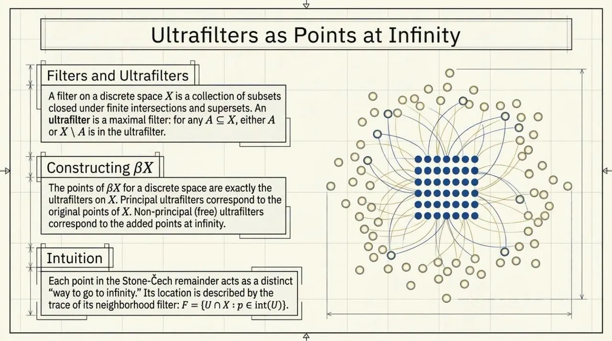
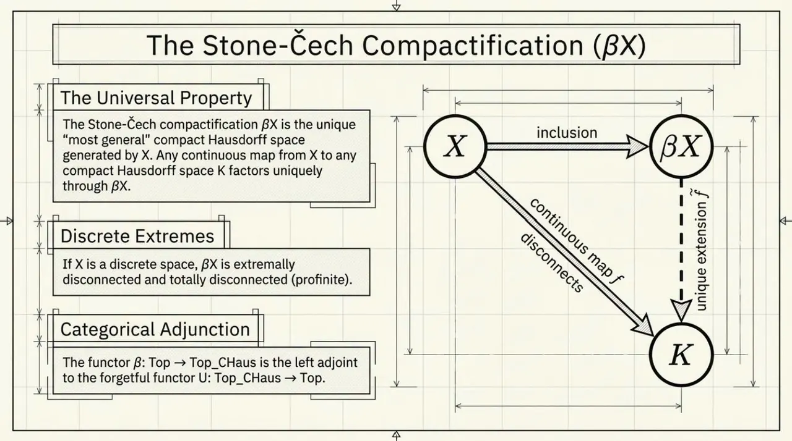

기둥 3 · 끝에서 보는 법 · 13장
무한 끝의 점 — 울트라필터와 스톤-체흐
무한으로 가는 길마다 점을 하나씩 붙여 콤팩트하게 마무리하기
무한으로 가는 길마다 점을 하나씩 붙여 콤팩트하게 마무리하기
핵심 질문 — 자연수를 끝없이 따라가는 「방법」마다 점을 하나씩 붙이면, 어떤 공간이 생길까?
04장에서 무한 이산 공간(자연수 ℕ)은 콤팩트가 아니었어요. 「무한 끝」에 점을 붙여 콤팩트하게 만들 수 있는데, 가장 넉넉하게 붙이는 방법이 스톤-체흐 콤팩트화 βℕ예요. 붙이는 점 하나하나는 「어떤 집합을 크다고 볼지」 정한 투표 규칙, 곧 울트라필터예요.
숫자 요약은 이 장의 예시 계산에서 나온 값입니다(실제 데이터가 아닌 설명용 값).
찬반 토론 안건: 「자연수의 무한 끝에는 점이 하나뿐이다.」 1조 찬성, 2조 반대!
반대예요! 짝수로 가는 길이랑 홀수로 가는 길은 다른 끝일 것 같아요.
행렬·벡터, 복잡한 공식을 몰라도 됩니다. 그림을 움직여 보고, 밑줄 친 말을 누르면 뜻이 나옵니다.
이 페이지 사용법: 밑줄 친 말을 누르면 뜻이 나옵니다(Esc로 닫기). 단계마다 그림을 직접 움직여 보고, 끝의 확인 퀴즈로 점검하세요. 앞 장: 12 함자와 짝 — 옷 입히기와 옷 벗기기
안건: 「자연수의 무한 끝에는 점이 하나만 있다.」 찬성 1조, 반대 2조. 조교가 「큰 집합 판정 게임」으로 양쪽 근거를 시험해요.
찬성 측: 무한대 기호 ∞는 하나뿐이잖아요.
…반대 측: (−1)ⁿ은 끝값이 하나가 아니야.
콤팩트하지 않은 무한 이산 공간을 「가장 넉넉하게」 콤팩트로 만드는 방법이에요.
울트라필터는 수학 곳곳(논리, 경제의 사회 선택 이론, 극한)에 나오는 도구예요.
스톤-체흐의 보편 성질 덕분에, 콤팩트 공간으로 가는 함수는 무한 끝까지 단 하나의 방법으로 이어져요.
울트라필터는 「모든 집합에 대해 크다/작다를 결정하는 투표 규칙」이에요. 무한 집합에서는 이런 규칙을 손으로 적어 보일 수 없어요 — 존재만 보장돼요. 그 점이 처음엔 이상하게 느껴져도 괜찮아요.
상황 질문 — 반에서 「이 모임은 큰 모임이다」를 투표로 정하는 규칙을 만든다면, 어떤 규칙이 서로 모순되지 않을까요?
「A ∈ 𝓕 또는 X \ A ∈ 𝓕」는 둘 다일 수도 있어요?
학교 수학으로 보면: 집합 단원의 여집합이에요. 둘 다일 수는 없어요: 둘 다 크면 겹친 부분 ∅도 커야 하는데, ∅은 크지 않다는 규칙에 걸려요.
| 식 조각 | 읽는 법 | 뜻 |
|---|---|---|
| 𝓕 | 필터 | 「큰 집합」들의 모음 |
| A ∈ 𝓕 | 에이는 큰 집합 | A가 큰 집합 목록에 있음 |
| A ∈ 𝓕 또는 X \ A ∈ 𝓕 | 울트라 조건: 모든 안건에 결정을 내림 |
X = {1, 2, 3, 4}, 𝓕 = 「2를 담은 모든 집합」(8개)
{2} ∩ {2, 3} = {2} → 큼 ✓, {1} 바깥 {2,3,4} → 큼 ✓
모든 A에 대해 2가 A에 있으면 A가, 없으면 바깥이 큼 → 울트라필터
「2와 3을 담은 모든 집합」은 {2}도 {1,3,4}도 크지 않음 → 필터지만 울트라는 아님
점 하나를 정해서 「그 점이 든 집합 = 큰 집합」이라고 하면 늘 울트라필터가 되네요!
학급 투표에서 「반장(점 2)이 찬성하는 안건은 통과」라는 규칙은 모든 안건에 결론을 내고 모순도 없어요. 「반장과 부반장이 모두 찬성해야 통과」는 둘의 의견이 갈리면 결론이 안 나요.
필터는 「큰 집합」 모음이고, 모든 A에 대해 A 또는 그 바깥을 포함하면 울트라필터예요. 한 점 x를 담은 모든 집합의 모음은 「주 울트라필터」. 유한 집합 위의 울트라필터는 모두 주 울트라필터예요.
미리 정한 모음 세 가지를 눌러 보고, 울트라 조건이 왜 통과·실패하는지 보세요.
「절반 넘는 집합」이 제일 민주적이니까 울트라필터예요!
{1,2,3}과 {2,3,4}는 둘 다 큰데, 겹친 {2,3}은? 크기 2라 절반을 넘지 못해.
원자료 「Ultrafilters as Points at Infinity」 위쪽 「Filters and Ultrafilters」 상자.

상황 질문 — 끝없는 마라톤 코스에 「짝수 번호 표지판만 밟는 길」과 「홀수 번호 표지판만 밟는 길」이 있다면, 두 길의 「끝」은 같은 곳일까요?
마라톤 코스의 짝수 표지판만 따라가는 사람과 홀수 표지판만 따라가는 사람은 끝까지 한 번도 같은 표지판을 밟지 않아요. 둘의 「끝」은 다른 곳이에요.
ℕ의 무한 부분집합(길)마다 「길의 끝부분을 담는 집합」 필터가 생기고, 이를 넓힌 자유 울트라필터 각각이 βℕ의 「무한 끝의 점」이에요. 짝수 집합을 큰 집합으로 보는 점과 홀수 집합을 큰 집합으로 보는 점은 서로 달라요.
길을 바꿔 가며 표의 「크다 / 작다 / 결정 안 됨」을 비교해 보세요.
「모든 자연수 길」이면 다 크다고 나오겠죠? 제일 큰 길이니까요!
짝수 집합은 모든 자연수 길에서 「결정 안 됨」이야. 울트라필터가 대신 정해야 해.
원자료 「Constructing βX」와 「Intuition」 상자: 주 울트라필터 = 원래 점, 자유 울트라필터 = 무한 끝에 붙인 점, 각 점은 「무한으로 가는 서로 다른 방법」.
상황 질문 — +1과 −1을 번갈아 내는 끝없는 신호가 있다면, 「끝값」을 하나로 정할 수 있을까요?
f = f̃ ∘ (포함)이라는 식의 동그라미는 뭐예요?
학교 수학으로 보면: 중학교 함수의 합성이에요. 먼저 X를 βX 안에 넣고(포함), 그다음 f̃를 하면 원래 f와 같다는 뜻이에요.
| 식 조각 | 읽는 법 | 뜻 |
|---|---|---|
| X → βX | 포함 | X의 점을 βX의 같은 점(주 울트라필터)으로 |
| f: X → K | X에서 콤팩트 하우스도르프 K로 가는 연속 함수 | |
| f̃: βX → K | 에프 틸데 | f를 무한 끝까지 이은 유일한 연속 함수 |
| β ⊣ 포함 | β는 「콤팩트 하우스도르프 공간을 일반 공간으로 보는 포함」의 왼쪽 수반 (12장과 같은 모양) |
f(n) = (−1)ⁿ: 1 → −1, 2 → +1, 3 → −1, …, 도착 K = [−1, 1](콤팩트)
짝수를 큰 집합으로 보는 끝점 p: f̃(p) = +1
홀수를 큰 집합으로 보는 끝점 q: f̃(q) = −1
모든 끝점은 짝수나 홀수 중 하나를 꼭 큰 집합으로 봄(울트라) → 끝값이 늘 하나로 정해짐
극한이 없던 수열도, 무한 끝의 점마다 값이 하나씩 딱 정해지네요. 울트라 조건 덕분이구나!
번갈아 깜빡이는 신호등도 「짝수 번째만 보는 사람」에게는 늘 초록, 「홀수 번째만 보는 사람」에게는 늘 빨강이에요. 보는 방법을 정하면 끝 색이 하나로 정해져요.
스톤-체흐 콤팩트화 βX는 X에서 콤팩트 하우스도르프 공간 K로 가는 모든 연속 함수가 βX로 단 하나의 방법으로 확장되는 「가장 넉넉한」 콤팩트화예요. 함자로 보면 β: Top → CHaus는 포함 함자의 왼쪽 수반이에요. X가 이산이면 βX는 완전히 끊긴 데다 「아주 끊긴」 공간이에요(14장).
길을 짝수, 홀수, 모든 자연수로 바꾸며 수열의 끝값을 보세요.
평균 내면 0이니까 끝값은 0으로 하면 되죠!
0은 수열이 한 번도 낸 적 없는 값이야. 끝점마다 +1 아니면 −1이 정해져.
원자료 「The Stone-Čech Compactification (βX)」: 보편 성질, 이산 X이면 βX는 아주 끊긴 공간, 범주론적 수반. 오른쪽 그림 X → βX → K.

시아가 찬성 근거를 찾으려고 AI에게 「수열 (−1)ⁿ의 무한 끝의 값은 무엇인가요?」라고 물었어요.
AI가 「평균」과 「극한」을 바꿔 말하면, 실제 값들(+1, −1, +1, …)을 몇 개 적어 보세요. 0에 가까운 값이 하나도 없다는 게 바로 보여요.
{1, 2, 3, 4}의 부분집합 모음 65,536가지를 전부 검사해 울트라필터를 세는 계산배틀!
「딱 4개. 점마다 「그 점을 담은 모든 집합」 하나씩.」
「규칙이 많으니 조합도 많겠죠. 수십 개는 될 거예요!」
누가 맞을지 먼저 예상해 보고 단추를 누르세요. 판정은 계산 결과로만 합니다.
개념정리 흐름: 필터와 울트라필터 → 무한 끝의 점 (자유 울트라필터) → 스톤-체흐 콤팩트화
| 개념 | 한 줄 뜻 | 일상 비유 | 비유의 한계 |
|---|---|---|---|
| 필터 | 모순 없는 「큰 집합」 모음 | 통과 규칙이 있는 투표 | 투표는 사람이 하지만 필터는 규칙만 |
| 울트라필터 | 모든 안건에 찬반을 결정하는 필터 | 반장이 정하는 투표 | 무한에서 자유 울트라필터는 적어 보일 수 없음 |
| 무한 끝의 점 | 자유 울트라필터 = 무한으로 가는 방법 | 마라톤 갈림길 | 길 하나가 끝점 하나를 「정하지」 않고 여러 끝점에 걸칠 수 있음 |
| 스톤-체흐 콤팩트화 βX | 모든 연속 함수가 유일하게 확장되는 콤팩트화 | 깜빡이는 신호의 끝 색 | X가 티호노프 공간일 때 X를 그대로 담음 |
토론 판정: 반대(2조) 승. 무한 끝의 점은 하나가 아니라 셀 수 없이 많아요.
짝수 끝, 홀수 끝! 우리가 맞았다!
∞ 기호가 하나라고 끝도 하나는 아니었네요. 기록해 둘게요.
울트라필터가 4개뿐이라니, 수십 개일 줄….
다음 장 예고: 14장 발표 + 질의응답에서는 βℕ처럼 「아주 끊긴」 공간과, 나머지 계산을 끝없이 쌓은 2진 정수(프로유한 공간)를 다뤄요.